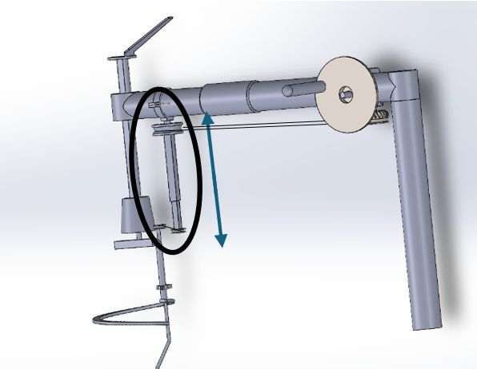

Steerable pen camera for the RAIS device
An affordable steerable camera attachment for gasless laparoscopic surgery in low- and middle-income countries. I designed miniaturised linkages that fit the retractor, printed them, and integrated a commercial pen camera with the existing hardware.